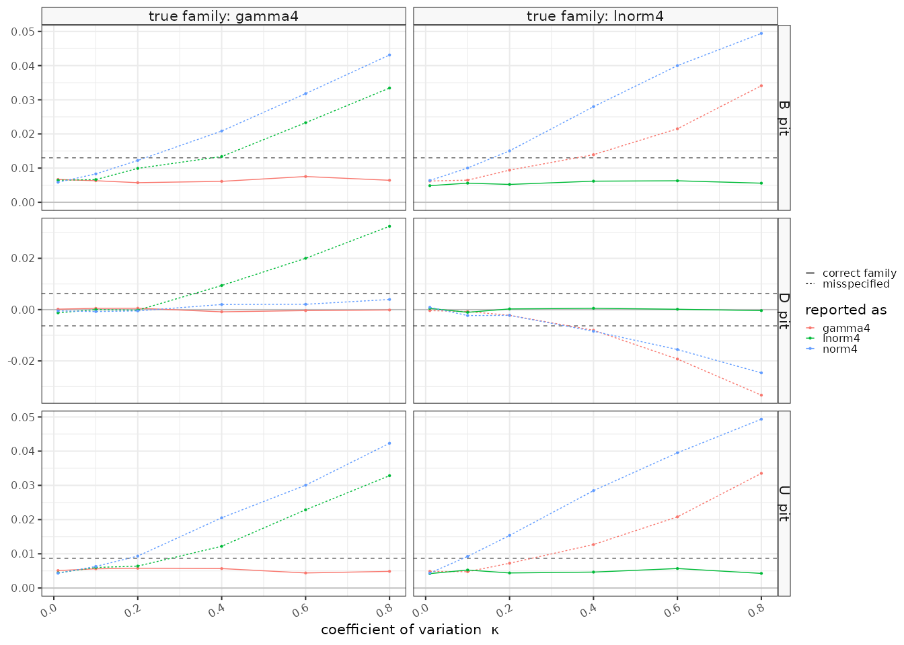
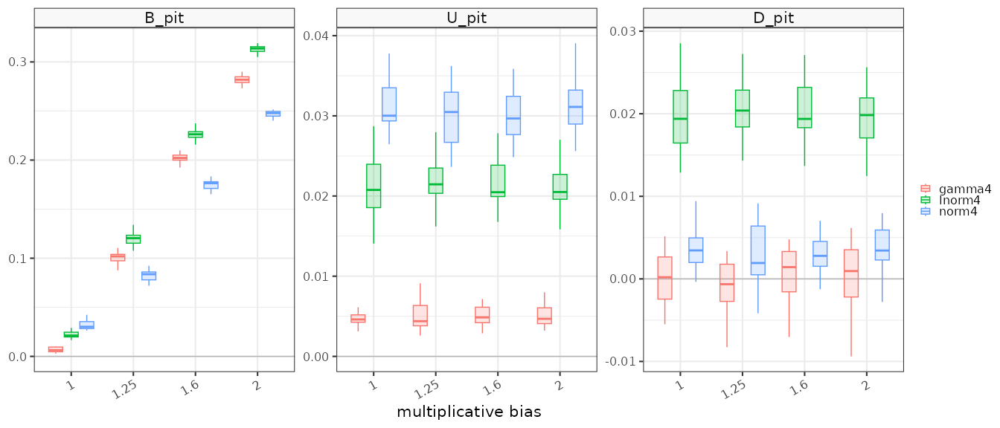

Model misspecification: what the metrics do when the predictive family is wrong
model-misspecification.Rmd
# library(pitw)
devtools::load_all()
#> ℹ Loading pitw
library(tidyverse)
#> ── Attaching core tidyverse packages ──────────────────────── tidyverse 2.0.0 ──
#> ✔ dplyr 1.2.1 ✔ readr 2.2.0
#> ✔ forcats 1.0.1 ✔ stringr 1.6.0
#> ✔ ggplot2 4.0.4 ✔ tibble 3.3.1
#> ✔ lubridate 1.9.5 ✔ tidyr 1.3.2
#> ✔ purrr 1.2.2
#> ── Conflicts ────────────────────────────────────────── tidyverse_conflicts() ──
#> ✖ readr::edition_get() masks testthat::edition_get()
#> ✖ dplyr::filter() masks stats::filter()
#> ✖ dplyr::lag() masks stats::lag()
#> ✖ readr::local_edition() masks testthat::local_edition()
#> ℹ Use the conflicted package (<http://conflicted.r-lib.org/>) to force all conflicts to become errors
.gg_pedantic(size = 0.5)
#> Warning: The requested font(s): [Roboto], are not present on the system. Alternatives will be used.
#> This warning is displayed once per session.
set.seed(1001)Everything else in this package asks whether a forecaster’s stated uncertainty is the right size. This vignette asks a different question: what happens when it is the right size but the wrong shape?
A forecaster that reports a normal distribution for a quantity whose errors are log-normal is not miscalibrated in the dispersion sense — its median is right and its interval widths are right on average. It is misspecified: it has assumed the wrong distributional family. Positive, skewed quantities such as incidence, or any rate are routinely reported with symmetric intervals, so this is a common failure in practice and not a contrived one.
The questions are:
- Do the metrics detect a pure family mismatch at all?
- Can they tell it apart from a genuine dispersion error?
- Does the bias adjustment still work when the error distribution is skewed? The adjustment is median-based, which should make it robust to asymmetry, but that has been an argument rather than a result.
1. Constructing a pure shape mismatch
To isolate shape we must hold everything else fixed, which the
package’s four-parameter families make straightforward:
norm4, lnorm4 and gamma4 are all
parametrised by a median and a coefficient of
variation
.
Matching both leaves only the shape to differ.
The construction uses the fact that lnorm4 and
gamma4 are scale families. Draw a multiplicative error
from the true family
,
and place the forecast at
.
Then
so a forecaster reporting is exactly calibrated by construction. A forecaster reporting a different family — same median, same coefficient of variation — is wrong in shape and in nothing else.
# One estimator: n predictions of a true value of 1, errors from `truth`,
# predictive distribution reported as `report`.
misspecified <- function(truth, report, kappa, kappa_reported = kappa,
bias = 1, n = 2000) {
w <- rlang::as_function(sprintf("r%s", truth))(n, 1, kappa)
pit_w(rep(1, n), bias / w, kappa_reported, dist = report, link = "log")
}The whole argument rests on the three families agreeing about what a median and a coefficient of variation mean, so it is worth confirming that each one inverts correctly before relying on any of it:
map_dfr(c("gamma4", "lnorm4", "norm4"), function(f) {
q <- rlang::as_function(sprintf("q%s", f))(0.9, 2, 0.5)
tibble(family = f, q90 = q,
recovered_p = rlang::as_function(sprintf("p%s", f))(q, 2, 0.5))
})
#> # A tibble: 3 × 3
#> family q90 recovered_p
#> <chr> <dbl> <dbl>
#> 1 gamma4 3.64 0.9
#> 2 lnorm4 3.66 0.9
#> 3 norm4 3.28 0.9A quick sanity check that the construction does what it claims — reporting the true family should score at the null level, which at is a of about 0.007:
map_dfr(c(0.3, 0.6, 1.0), function(k) {
misspecified("gamma4", "gamma4", k) |> mutate(kappa = k)
}) |>
transmute(kappa, B_pit, U_pit, D_pit)
#> # A tibble: 3 × 4
#> kappa B_pit U_pit D_pit
#> <dbl> <dbl> <dbl> <dbl>
#> 1 0.3 0.00482 0.00450 -0.00326
#> 2 0.6 0.00470 0.00490 -0.00424
#> 3 1 0.00616 0.0116 -0.002472. Three kinds of mismatch
We sweep from 0.01 (nearly symmetric, where all three families almost coincide) to 0.8 (strongly skewed, where they do not), for two true families and three reported ones. Twenty replicate estimators per point.
grid <- crossing(
truth = c("gamma4", "lnorm4"),
report = c("gamma4", "lnorm4", "norm4"),
kappa = c(0.01, 0.1, 0.2, 0.4, 0.6, 0.8),
rep = 1:20
)
sweep <- grid |>
mutate(score = pmap(list(truth, report, kappa),
~ misspecified(..1, ..2, ..3))) |>
unnest(score) |>
mutate(match = if_else(truth == report, "correct family", "misspecified"))
summ <- sweep |>
group_by(truth, report, kappa, match) |>
summarise(across(c(B_pit, U_pit, D_pit), median), .groups = "drop")
crit <- tibble(
metric = c("B_pit", "U_pit", "D_pit"),
critical = c(b_pit_significance(NA, 2000)$critical_0.05,
u_pit_significance(NA, 2000)$critical_0.05,
d_pit_significance(NA, 2000)$critical_0.05)
)
summ |>
pivot_longer(c(B_pit, U_pit, D_pit), names_to = "metric") |>
mutate(metric = factor(metric, c("B_pit", "U_pit", "D_pit"))) |>
ggplot(aes(kappa, value, colour = report, linetype = match)) +
geom_hline(yintercept = 0, colour = "grey70") +
geom_hline(data = crit, aes(yintercept = critical),
linetype = "dashed", colour = "grey40") +
geom_hline(data = filter(crit, metric == "D_pit"),
aes(yintercept = -critical),
linetype = "dashed", colour = "grey40") +
geom_line() +
geom_point(size = 0.8) +
facet_grid(metric ~ truth, scales = "free_y",
labeller = labeller(truth = ~ paste("true family:", .x))) +
labs(x = expression(paste("coefficient of variation ", kappa)),
y = NULL, colour = "reported as", linetype = NULL)
Three things to read off.
The metrics do detect it. Every misspecified curve leaves its critical value, and does so at a of around 0.4 — well inside the range of real skewed quantities. At the families are close enough that nothing fires, correctly: a mismatch that makes no practical difference is not reported as one.
The direction of the gamma/log-normal mismatch is signed and interpretable. Reporting log-normal when the truth is gamma gives a positive ; reporting gamma when the truth is log-normal gives a negative one. The log-normal has the heavier right tail, so using it where it does not belong puts too much mass in the tail — conservative — and the metric says so with a sign.
Reporting a normal behaves differently. stays near zero for both true families, while rises steeply. That is the “right width, wrong shape” signature from the three-part test, and it is exactly what should happen: a symmetric distribution fitted to a skewed one is too light on one side and too heavy on the other, and those two errors cancel in the signed metric.
3. Telling shape from width
That last observation generalises into a usable diagnostic. Compare the undirected and directed metrics as a ratio, , against a reference: a forecaster with the right family but the wrong width.
width_error <- crossing(kappa_reported = c(0.4, 0.5, 0.75, 0.9), rep = 1:20) |>
mutate(score = map(kappa_reported, ~ misspecified("gamma4", "gamma4", 0.6, .x))) |>
unnest(score) |>
transmute(scenario = "wrong width, right family", U_pit, D_pit)
shape_error <- sweep |>
filter(match == "misspecified", kappa >= 0.6) |>
transmute(scenario = if_else(report == "norm4",
"wrong skew (normal reported)",
"wrong tail (gamma/lnorm swapped)"),
U_pit, D_pit)
bind_rows(width_error, shape_error) |>
group_by(scenario) |>
summarise(median_U = median(U_pit),
median_abs_D = median(abs(D_pit)),
ratio = median(U_pit / abs(D_pit)))
#> # A tibble: 3 × 4
#> scenario median_U median_abs_D ratio
#> <chr> <dbl> <dbl> <dbl>
#> 1 wrong skew (normal reported) 0.0411 0.00903 4.78
#> 2 wrong tail (gamma/lnorm swapped) 0.0273 0.0267 1.02
#> 3 wrong width, right family 0.0533 0.0533 1.00
bind_rows(width_error, shape_error) |>
ggplot(aes(abs(D_pit), U_pit, colour = scenario)) +
geom_abline(slope = 1, intercept = 0, colour = "grey60") +
geom_point(size = 0.9, alpha = 0.7) +
coord_equal() +
labs(x = expression(paste("|", D[pit], "|")), y = expression(U[pit]),
colour = NULL) +
theme(legend.position = "bottom", legend.direction = "vertical")
A pure width error sits on the diagonal: almost exactly, because stating intervals uniformly too narrow pushes the PIT values toward both ends in a way that the signed weight accumulates rather than cancels.
A tail-weight mismatch also sits on the diagonal. Swapping gamma for log-normal at matched median and is, as far as the PIT values are concerned, indistinguishable from getting the width wrong. This is an honest negative result and worth stating plainly: the metrics measure dispersion calibration as realised, and a forecaster can achieve the realised effect of an over-wide interval either by stating one or by choosing a family with too heavy a tail. No PIT-based diagnostic can separate those, because the PIT values are identical.
A skew mismatch sits well above the diagonal, with ratios of 3–20. Fitting a symmetric family to a skewed one produces a departure the signed metric cancels, so .
So the practical rule is the one the three-part test already implies, now with a concrete cause attached:
| Pattern | Diagnosis |
|---|---|
| , both significant | net dispersion error — stated width wrong, or tail weight wrong |
| asymmetry mismatch — a symmetric family fitted to a skewed quantity | |
| only significant | location error, family and width fine |
4. Does the bias adjustment survive asymmetry?
The adjustment estimates a single link-scale shift using a median, which should make it robust to skew where a mean-based estimator would not be. With a log link, a bias is a multiplicative factor, so we scale every forecast by and watch what happens.
bias_sweep <- crossing(
report = c("gamma4", "lnorm4", "norm4"),
bias = c(1, 1.25, 1.6, 2),
rep = 1:20
) |>
mutate(score = pmap(list(report, bias),
~ misspecified("gamma4", ..1, 0.6, bias = ..2))) |>
unnest(score)
bias_sweep |>
group_by(report, bias) |>
summarise(across(c(B_pit, U_pit, D_pit), median), .groups = "drop") |>
pivot_wider(names_from = bias, values_from = c(B_pit, U_pit, D_pit))
#> # A tibble: 3 × 13
#> report B_pit_1 B_pit_1.25 B_pit_1.6 B_pit_2 U_pit_1 U_pit_1.25 U_pit_1.6
#> <chr> <dbl> <dbl> <dbl> <dbl> <dbl> <dbl> <dbl>
#> 1 gamma4 0.00632 0.102 0.202 0.282 0.00461 0.00439 0.00486
#> 2 lnorm4 0.0212 0.120 0.226 0.314 0.0208 0.0215 0.0205
#> 3 norm4 0.0301 0.0837 0.176 0.248 0.0300 0.0305 0.0297
#> # ℹ 5 more variables: U_pit_2 <dbl>, D_pit_1 <dbl>, D_pit_1.25 <dbl>,
#> # D_pit_1.6 <dbl>, D_pit_2 <dbl>
bias_sweep |>
pivot_longer(c(B_pit, U_pit, D_pit), names_to = "metric") |>
mutate(metric = factor(metric, c("B_pit", "U_pit", "D_pit"))) |>
ggplot(aes(factor(bias), value, colour = report, fill = report)) +
geom_hline(yintercept = 0, colour = "grey70") +
geom_boxplot(outliers = FALSE, alpha = 0.2) +
facet_wrap(~ metric, scales = "free_y") +
labs(x = "multiplicative bias", y = NULL, colour = NULL, fill = NULL)
climbs steeply with the bias, as it must — the forecasts really are displaced. and are flat: the same values at a bias of 2 as at no bias at all, for every reported family including the misspecified ones.
So the claim holds. The median-based adjustment is bias-invariant under skewed error distributions, not only under the symmetric ones the main validation uses, and the invariance is not disturbed by the family being wrong at the same time. That matters because misspecification and bias are exactly the pair you expect to co-occur in practice: a model that has the wrong family for a skewed quantity is also likely to be systematically off-centre.
5. Summary and caveats
- A pure family mismatch — right median, right coefficient of variation, wrong shape — is detected, from around upward.
- A tail-weight mismatch is indistinguishable from a width error, because it produces the same PIT values. The metrics report the net realised dispersion error, which is the honest answer to the question they are asked.
- A skew mismatch has its own signature, , which no width error produces.
- The median-based bias adjustment remains exactly bias-invariant under skewed errors, including when the predictive family is simultaneously wrong.
Caveats. All of this holds the median and coefficient of variation matched exactly; a real misspecified model usually gets those slightly wrong too, so the signatures above will be mixed rather than pure. The families compared here are the realistic ones for positive skewed quantities, and nothing is claimed about heavy-tailed symmetric alternatives such as a distribution, which the package does not currently provide in the four-parameter form. And a normal family fitted to a positive quantity places mass below zero; at the larger values here that is part of what is being detected, which is realistic but means the effect is not purely one of skew.